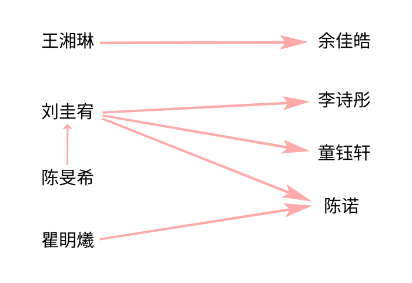

学生
今晚我家只有我一个人，我可以把所有都发泄出来了！我已经放弃了，没有开玩笑，不要有谁再给我提“童钰轩”三个字昂，就让这1698天的喜欢全部都化为灰烬吧，就让这42天的想哭全部给我哭出来吧。
——刘圭宥
每个班都有各种各样的学生，他们各显神通，造就了这一个班级。六年一班的“典型”就是瞿眀爔、王湘琳、叶宸铭等人。
注：点击上方的“”按钮快速跳转至目标位置！
学生档案
王湘琳
五年级前，王湘琳仅在“特殊时期”登场，如被打红脖子等。
自六年级以来，她就逐渐变得“名声赫赫”——原因原来是……
六年级上学期时，王湘琳有一本日记本，不过是拿英语笔记本改的！
王湘琳日记本制作流程
要做日记本，那还得看王湘琳。首先，准备好一本刚出生的英语本，上面有着“英语”二字，里面没有任何字迹。本子的整体呈褐色，封面材质应该是牛皮纸吧。
这时，一个很重要的工具——涂改带就上场了。
准备好涂改带，并将“英语”涂掉，这样，英语本就初步具备了变成笔记本的条件。
但王湘琳这种人，肯定不会满足于这种简陋的本子——她偏要给日记本一点装饰。于是，她又在下面涂出了一个框，接着又在左边画出三列。
最后，在原来“英语”的那个区域写上“日记本”，下面的方框写“心情本”，然后即兴发挥一段：
我们每个人都有七情六欲
喜怒哀乐悲恐惊
酸甜苦辣咸
再加个笑脸，左下角写个“顾兮”这本日记本就做好了！虽然封面不怎么样，但能用就很好了。
封面做完，接下来就开始写日记了。你以为她的日记里只是什么ET、CT的事件或者学生八卦？也不能否认——因为里面的确有八卦，只不过是她自己的。
六年以来，班里喜欢人的人不少（参见“爱情关系”），但是像她这种执迷不悟的人不多。这不，她的日记是以“分”为单位更新的，具体内容则是写她喜欢的人。
至于王湘琳是何时喜欢上余佳皓的，我们不得而知，只知道她地失恋日期是9月15日，她就是在这一天开始写日记的。
正因如此，她对自己日记的防备等级极高，绝不许有人看到，否则后果不堪设想。可能是她的崩溃或者疯狂反击。结果，日记本反而成为了“重点对象”，不少人慕名前来偷看，导致王湘琳一感觉日记被偷看就会严加拷问。
王：“你是不是又动我日记了？”
其他人：“没有。”
王（着急）：“我都跟你讲了不要动我日记！……”
成功偷到日记的案例也不少，如李诗彤就曾在午托时翻出日记本并拍照。另外，在一次ET看班时，蔡宇城就把王湘琳用涂改带涂抹的“保密”部分刮开，令王湘琳哭了一中午。
原来，涂改带涂掉的部分就是王湘琳的“绝密”，类似的还有：
王湘琳日记的加密部分
原来的内容
除了写与余佳皓的故事外，她还写了：
- 有一页王湘琳写了一堆自己喜欢的电视剧，像这样：
- 在写电视剧的那一页左边还有一堆数字的含义（全部是有关爱情的），午托时王湘琳还拿这些内容考吴一鸣和张炜承（问数字的含义以及记电视剧的顺序）
- 不知谁写了个“TE母炸了”（把ET写成TE，唯有陈忠宇习惯这样）
- 写了一堆花里胡哨的内容并注明“千万别让林昕彤看见！”
- 大概写了一些一年级想要快点毕业，六年级不想毕业的东西
《莲花楼》《叶》《叶2》《叶3》《斗1》《斗2》
所以王湘琳的日记呢？别怕，这不就来了？
9.15
我失恋了，55555我好想哭，我好希望今天、明天他能去广场踢球5555555我错了，你不要不理我呜呜呜……我以后都听你的话，你不要不理我好不好啊……呜呜呜呜呜我好心痛啊余jiāhào
余佳皓，你不要不理我好不好啊×10我想哭，我闰闰说让我和他分手啊×20。而我不想分啊×30，她说他不会做饭，没有fj，让我快分55555，她还说他是渣男，我不信她。哎，他今天对我好冷淡啊×5
啊啊，好开心，他和我道歉了啊×40，哈哈，那他今天可以出来跟我踢球。
无语了，一个人都没有，呜呜呜他啥时候到啊cos：希望他可以7：00动身。
呜呜呜×50，他好慢啊，他为什么要7：30动身啊，啊×60他就不能快点吗，呜呜呜想哭呜呜呜×70
呜呜呜，有人让我和他去找1698，哎，我想哭他就不能快点吗？这里只有我了他不能快点吗？还有十分钟我能坐的了吧……
无语了，我出来玩看到小绿茶了，呜呜呜无语死了，不能让我好好玩会儿吗？呜呜呜她一直想看啊×10，无语了
呜呜呜，我今天吃醋了，他不知道我tm想死的都有了，我tm都哭了，他也不知道，还和他们踢球，m的下次不带了，啥也不带，气死他，把他气死，然后给他买个棺材，把它装进去，再给他一巴掌，把他扇死。cso：他说过不再和小绿茶玩了，说到她m的她今天和他挨得好近，真的想过去给她一巴掌呜呜呜×100想哭……×1万
9.16
家人们谁懂啊，m的我昨晚哭了一小时，哎我和他要分吗……呜呜呜昨天他让小绿茶出来玩，tm的让我哭了一小时，我要分吗？等待中……卧槽！不要那我还分吗……哎我听着悲哀的歌，我又又又又又又又想哭了，Bye……
后来，王湘琳就把日记交给余佳皓保管，至今下落不明。
对余佳皓的520种喜欢法
1.夹子当成余佳皓
王湘琳买了一个芒果造型的夹子。因为这芒果的颜色偏黑，跟余佳皓的肤色一样，所以王湘琳就把它当成了余佳皓，结果……
CT想把书夹在展台上，可是讲台旁的夹子都太小，不能用。这时，王湘琳拿出了“余佳皓”，递给了CT，CT看到后，夸了她几句，然后拿去用了。王湘琳则哭笑不得。
这还没完。CT走下讲台，准备将夹子还给王湘琳，走了一半，CT突然说：“这是我的发卡~”同时将“余佳皓”往自己的头上一夹——王湘琳苦笑着接过了夹子……
2.文字间流露的情感
例如一次午托，王湘琳在纸巾上写“我喜欢余佳皓”。还有一次，王湘琳让我写立体字：
WXHYJH
YJHSWLG
WSYJHLP
是不是挺深奥？别急，让我们来翻译一下。其实，这三行字就是拼音简写。
WXHYJH 我喜欢余佳皓
YJHSWLG 余佳皓是我老公
WSYJHLP 我是余佳皓老婆
（王：你完了！）
那段时间，陈旻希完成了写1698个“刘圭宥”的壮举，于是王湘琳也开始写“余佳皓”，最终写了520个！
注：上下滑动查看更多“余佳皓”
正因如此，她对“余佳皓”三字极其敏感。又是一次午托，同学们正在午休，教室里格外安静。这时，两人从门口走廊跑过，其中一人喊：“×××和余佳皓在三楼拉大便！”当时她的心情也是无法用语言描述。
数学课上，MT还会经常提到“<（小于）”、“1+2”、“加号”等词语，这也会引起王湘琳极大的反应。
现在，我也不知道她还喜不喜欢余佳皓。只知道有一次放学时，余佳皓在楼道上骂她是女鬼。后来，王湘琳在班上骂余佳皓是空气、狗屎、傻子。
与其他人
陈宇恒
所以，只要有人说出令她不满意的话，那人就会遭受痛击，若痛击无效，她就会用冰冷的语气说：
例如陈宇恒。陈宇恒是最常被王湘琳欺负的人。由于两人只有一组之隔，每当陈宇恒有什么动作时，王湘琳首先会用脚猛踹，倘若这节是自习的话，还会手脚并用，打的陈宇恒连连求饶。
还有更经典的，就是陈宇恒午托时在楼下正走着，王湘琳突然朝他的屁股踹了一脚,回来后王湘琳还拒不承认——结果不久陈宇恒就去告状了。后来，面对MT的审问，她还装作一脸无辜的样子，说：“我不小心踢了一下陈宇恒的肛门。”陈宇恒甚至为此写了一篇作文，名叫“肛门事件”，参见陈宇恒。
从此以后，王湘琳就像发现了新大陆一样，与陈宇恒一有不和就威胁：“小心你的肛门不保。”
到了六下，虽然不拿肛门威胁陈宇恒了，但是还是得打，不信可以去看毕业照那天拍的微电影（纪实篇），上面就有陈宇恒vs王湘琳的场面。
CT
在CT面前则不然。王湘琳不但不敢打人，而且还得反手被CT“摩擦”，因为CT会在全班说王××的黑历史。有一次，王湘琳说中午CT找她，对她说：“不要再喜欢别人了哈！”然后王湘琳就很纳闷了：他怎么知道我喜欢余佳皓？！
这还是好的结果，重点是CT经常在班上当面贬她，还是带着暗示的那种。如：
以及放学到门口找他、下课带上东西默写等招数，都屡试不爽。
还有一次，CT偏题道：“黄老师的老公也是我的学生……”被王湘琳拿纸条记录下来了。后来CT发现后，也是没给她一点面子，大声念道：“黄老师的‘脑公’是杨老师的学生……”
外号
王湘琳以前就有外号（王昌龄），自从失恋之后，外号更多了。
曾几何时，同学们发现了她的网名——顾兮，结果一下课，同学们（陈忠宇喊得最起劲）就阴阳怪气地喊：“顾兮——顾兮！……”而王湘琳则会抱着头喊：“哎呀！”有一次早读《穷人》同学们读道：“近义词：顾兮（顾惜）——爱惜！”
上课了，同学们也不消停。像王湘琳的“好邻居”陈宇恒就会小声地喊她的网名，也会引起她极大的反应。从此，看王××就成了一种“娱乐方式”。
就因为这样，王××又多了个外号：王人妖。同时，她的第二个网名——白狐被爆了出来，她甚至还在午托时说自己还有一个网名。六年级下册时被查出来了——就在她的书包里。上面写着“顾兮、白狐、无声、琳”。
看书
这就是顾兮在六下的主要八卦了。王湘琳很喜欢看唐家三少的作品，人尽皆知的一套就是《斗罗大陆》，不过，她还看过《天珠变》、《神印王座》等书籍，总之都是唐家三少的（当然她还有看过非唐家三少的作品，如《轻吻星芒》、《樱语年光》等）。同学们都说这是“小黄书”（就连CT也这么认为）——尽管王湘琳再三解释，还是无法改变其看法。没错，王湘琳日记中的“《斗1》《斗2》”说的可能就是《斗罗大陆》。
对于《斗罗大陆》，王湘琳是一本接一本地带来，不知道她哪来的那么多钱买书。不过可以确定的一点：她不希望大家知道《斗罗大陆》里的细节。如书中的扉页有一个网址：http://zntsts.tmall.com，明明是“中南天使图书专营店”的网站，她就硬是不让人看，说是她哥哥搞的网站。
王湘琳看书时还经常会做小动作，例如在午托班时，王湘琳看书看到刺激的环节了，她就会在抽屉里做出“一闪一闪亮晶晶”的动作；看到令人伤心的环节了，她还会跟着伤心。一次她与陈忠宇谈论这本书时，还做出了撸管动作。
扭曲现实
别人每当说出一句正常的话语时，王湘琳就会大喊：“啥？！你喜欢×××？”例如陈彦豪模仿道：“陈诺呢？”王湘琳就喊：“啥？你喜欢陈诺？”
音乐
顾兮喜欢听音乐：她在她的其中一个U盘里有“曾暖暖古筝”文件夹，里面是一堆（纯）音乐，如：我的祖国、白狐、千年等一回等。六年级时，她还经常带无线耳机、手表和充电宝以便在午托时听音乐。
当然，顾兮的梗不止这些，还有：
王湘琳发朋友圈：“考试中”并配上视频
王湘琳发朋友圈：“一人一句假话，我不喜欢余佳皓。”
王湘琳写下日记
王湘琳送余佳皓礼物
陈忠宇喊“小余~”导致王湘琳崩溃
王湘琳在纸巾上写“我喜欢余佳皓”
王湘琳在日记本中写了一个大大的“我爱你”并用涂改带涂掉，然后写上“加密”，结果涂改带被蔡宇城刮开导致王湘琳哭了一个中午
王湘琳：“我如果英语考及格了就去找余佳皓生猴子。”
王湘琳骗我说：“我当着余佳皓的面把日记烧了。”
午托时外面有人喊：“×××和余佳皓在三楼拉大便！”
王湘琳找我写立体字：
WXHYJH（我喜欢余佳皓）
YJHSWLG（余佳皓是我老公）
WSYJHLP（我是余佳皓老婆）
王湘琳：“余佳皓骂我女鬼！”
“你是不是又翻我日记了？”成为经典
“顾兮”这个网名被全班知道
李诗彤翻王湘琳日记并拍照
频繁到门口找余佳皓
早读时，同学们读近义词：“顾兮（顾惜）——爱惜”
王湘琳把余佳皓（芒果夹子）借给CT。CT归还时，突然说：“这是我的发卡~”同时将“余佳皓”往自己的头上一夹
王湘琳在课上写诗被CT发现。CT：“你又放花痴了……”
CT：“这个人有点早熟。”
王湘琳踹陈宇恒屁股却拒不承认，还在MT面前说：“我不小心踹了一下陈宇恒的肛门。”
王湘琳写520个余佳皓
CT：“把一个男生的名字写一千遍~”
MT处理王湘琳问题
王湘琳骂余佳皓空气、狗屎、傻子
王湘琳：“余佳皓家暴我！”
王湘琳和余佳皓的孩子被命名为“鱼丸”
王湘琳开始看唐家三少作品
王湘琳偷拍MT、CT、ET
王湘琳得知余佳皓小名（兔兔）
瞿眀爔
在学霸中，当属瞿眀爔最为显眼。他在老师及家长眼中印象极好。
外貌
男神的衣服有黑绿线条交错（简称“西瓜条”）、“不潮少年”、5月27日等款式。
而头发从后面看，好像是倒三角样式的。有时候，同学们会说：“男神有呆毛！”让男神不得不用手捂住头。
最引人注目的要数那副眼镜，这是男神最形象的一个特征，每当有人画他时，眼镜都是“标配”（如李诗彤作画的艺术字“瞿”）。男神的眼睛包括蓝色和黑色，镜框大致呈半圆形，是男神上小学后才开始戴的。
男神的表情也很特别，总会做出一副诧异、惊讶的样子，这种表情在拍毕业照时得到了很好的体现。
与CT
瞿眀爔是“假惺惺”中的一员，经常在课前帮忙挑选上等粉笔供CT使用,屡次被CT表扬。又因为瞿眀爔学习成绩很好，于是得到了CT的大加赞赏与看好。例如CT称呼他“男神”“标杆”，还说“班上所有的人都比不过一个瞿眀爔”。此外，当瞿眀爔优化被折时，尽管他在CT说出这件事后很久才拿上去给CT，也未受到惩罚。
一次语文课上，就因为瞿眀爔请假，而导致班上的读书声小了一点，结果就被CT说了。
小动作
瞿眀爔上课经常做小动作（尤其是语文早读），例如：
- 摘眼镜
- 搞基动作
- 闻头皮
男神会把双手由下至上地拖住眼镜，缓缓摘下，并把眼镜放在桌上闭目养神。
一次早读时，男神做出一个怪异动作：一只手摸着后脑勺，另一只手放在了大腿内侧的部位上。
男神曾挠了一下头，然后将挠过头的手指放在鼻子前闻味道。
爱情
五年级（或四年级）时，班里突然传出“男神喜欢陈诺”的消息，当时在班上引起了热议。至于消息对不对，可能得看下面的证据了。
- 体育课时，同学们假装“绑架”CN，男神看见后直接回头，还说：“看不见……”
- CN把奶茶送给男神
- 男神写情书被当场抓获
- 我让男神将东西送给喜欢的人，男神将它放到CN桌上
更多
瞿眀爔曾在军训时献唱《青花瓷》引起热议。另外，他与郭吉家关系密切，下课时经常一起聊天，还多次谈论《哈利波特》中的内容。
刘圭宥
刘圭宥也是很经典的，例如那条“今晚我家只有我一个人”的朋友圈就是他“精心撰写”的。
对于老师
刘圭宥是学校大队委以及（以前）执勤队员之一，还多次登上教学楼旁那块“阳光少年”榜。另外，东升小学官网也多次出现刘圭宥的身影。（参见东升小学官网）
官方是这样介绍的:
小个子蕴藏着大能量，阳光如我，快乐如我！
我是三年（1）班的刘圭宥，任校少先队执勤队员、班级学习委员。在东升这片沃土上，我从一棵稚嫩的幼苗成长为一个勤奋上进，多才多艺，知书达理的新时代少先队员。爱班级，爱集体，爱学习，爱书法，爱音乐，爱运动，……阳光上进的我将走得更远。
刘圭宥三年级时的照片也在那里了，这些照片还被做成了表情包：

刘圭宥日常照片

刘圭宥弹钢琴

刘圭宥看书

刘圭宥做手工&打跆拳道

刘圭宥去玩
总之很像添狗。
但是，他在CT的课上就不一样了。CT多次说刘圭宥的大队委席位不保，对他的印象不怎么样。
朋友圈
刘圭宥六年以来最经典的桥段当然是那条朋友圈了。前一天刚发出去，第二天就在班上炸开了锅！
今晚我家只有我一个人，我可以把所有都发泄出来了！我已经放弃了，没有开玩笑，不要有谁再给我提“童钰轩”三个字昂，就让这1698天的喜欢全部都化为灰烬吧，就让这42天的想哭全部给我哭出来吧。谁要是再给我在那里狗叫一句啊，我特么直接一巴掌给你干过去！说实话，我是真的一年级开学第一天就喜欢上了ta，而且以前我妈不在家的时候把我扔到ta家，都是我自己提出来的，只为多看ta几眼。但现在呢，就算了吧，也不可能了。就让这泪水全部都流出来吧，撕心裂肺地哭出来吧。反正也只有我在家，也没人管。ta的生与死，喜怒哀乐，都与我无关了。也许像三叶和阳菜这样好的女生只有在二次元出现吧。像新兰这样的情侣，也只有在动漫里有吧，我也不想多说什么，只能说心碎了，碎了一地💔。但是也要乐观一点吧，至少在小学生活中，喜欢上了一个人的漂亮、学习好，但是不喜欢我的女孩子，ta说正在想要不要把我拉黑。我反正随便，你拉不拉黑我都愿意，你就算删了我都不会想再开始加，忘了你最好，反正没你我也能活，也有其他人会跟我聊天，不需要你来填满我的生活，谢谢你，能遇见你我真的很荣幸，但是现在，不……这么……想了……💔💔💔
第二天，这条朋友圈就被郭吉家复印了多份，还分发给了瞿眀爔、林煜昕等人。当刘圭宥来的时候，同学们纷纷起哄，到座位上时，刘圭宥早就脸红了。从此，刘圭宥就有了俩新外号：1698和42。
另外一件事情是，同学们看见朋友圈中“不要有谁再给我提‘童钰轩’三个字昂”，便把“童钰轩”涂掉，改为“TYX”。
注：本网页不支持将“童钰轩”改为“TYX”！
以至于期末考后，同学们纷纷将1698推向童钰轩，并齐声大喊“表白！表白！”结果就被别班老师训了。在第二个学期时，ET还让1698与童钰轩俩俩对话，同学们也起哄了不少时间。
一次语文卷子上有一篇习作，让写童话故事，结果李诗彤就代入了“1698”、“42”两个词（如今这篇作文已失传），大概内容是：熊1、2、3、4、5、6、7在114514号房间内被蛇咬，熊42用手机给熊1698打电话，熊1698骑爱玛电动车赶来煮了蛇，说：“啥熊都有，啥蛇都打。”
打人
据郭吉家透露，1698曾发朋友圈：“如果有人说‘1698’的话，我就一巴掌扇过去。”一天郭吉家骑车看到刘圭宥，就给他朗读1698，结果1698就来推车（没推倒），然后就在那扇郭吉家。（见“白沙街疯人院”群聊）
郭吉家还在这个群里透露道：
我们想在刘xx面前朗读“1698‘名著’”然后我们一路追，他们走楼梯，我们坐电梯，我随便按了一个四，结果他们正在四层，我们一路追追到了8层到九层楼梯间，战斗就是这里打开的，他先动的手（后面没记住）然后被我摁在了墙上，然后开始咬我（现在手上的一道疤就是当时留下的）而我在扇他巴掌，后面又不知道怎么了把它放开了，然后他提自行车没提起来（期间又过了许久）本来要收了，结果把我手机弄掉了，然后又开始了我把他摁在墙上打他的头，他嘴里还说着“你很会打嘛”然后我想揪他的头发往墙，被cn制止，结束后他又去问中岛为什么不帮忙
毕业考结束后，1698又说要在星巴克（蜜雪冰城）请客。结果我给闸总（见外号）展示和李诗彤的语音通话页面，然后发生的事成了经典：
(星巴克店内)
闸总一看，也没说话，只是潇洒地从座位上起来，绕过桌子来到我旁边。然后，他用左脚猛踹我，踹了几下后又打我头，口中大声地说：“操你妈操你妈操你妈！……”惹得星巴克店员看了这一眼。同时，闸总伸手抢手机和自拍杆，闹了一会儿才走。
（我给他展示闸总证件照时也是同样反应。）
关系
刘圭宥似乎和郑隆俊、刘子岑关系很好，例如刘圭宥每天都和那两人回家。
另外，他似乎显现出对CN的喜爱与赞美之情。在军训时，他曾说过：
当然，目前已经确定，刘圭宥喜欢李诗彤，这一点早在毕业前就有体现，如刘圭宥把一整盒魔芋爽送给她。不过如何证实呢？据李诗彤透露，刘圭宥写了一篇很长的作文：
嘿 你这个时候肯定睡得很熟吧？知道吗 我有好多好多话想对你说…还记得以前刚上一年级的时候么 那时的我还挺内向的 我习惯性的会扫视完整个教室 想找到一个同道中人作朋友 当扫过你时 我的眼睛停顿了一下 第一眼就感觉是一个很可爱还有点腼腆的小女孩 你就一个人坐在那 看着别人一起玩 也想加入他们 但是不知道为什么 明明那么想一起玩却只能凑过去看他们玩 跟我惊人的相似 我觉得我可以和你当个朋友 但后来并没当上朋友 具体原因我也忘了 直到三年级 这就是我对你全部的印象了……
我喜欢你 李诗彤 非常非常非常喜欢 感情真的会让人忘乎所以 我发现上一次体会到这种感觉还是在一年前 你是个很棒的女孩 我愿意为了你而改变 你永远是我心中最耀眼最美丽的女孩🧡🧡🧡
拍毕业照前一天晚上 你又有不会的题 又来问我（那时还觉得你怎么这么笨啊😂）第二天 你打扮的很好看 不只是很是非常 中午到时候 我们一起玩真心话大冒险 你不是让我抱cmx么 然后我不肯 你居然直接抓住我的手把我推了过去 你那时应该没注意到吧 我一直在看你 我的心跳好快好快 喜欢上你的幼苗估计就是在这时种下的吧 后来 我上台唱歌 你跟着我一起唱 我抬头偷看你一眼 笑了 不知道怎么形容 应该就是喜欢上你了吧😳回去后 我们聊了一会 我对你的喜欢达到了顶峰……
上了三年级之后 我对你最最深的印象 大概就是五年级的时候 那时的我喜欢上了一个女孩 你有恰巧是那个女孩的朋友 你天天笑我 笑我舔狗 那时我其实还挺讨厌你的说实话😥等到六年级以后 事情开始慢慢淡了下去 我又重新“鉴定”你的性格 六年级的你没了一年级时的可爱腼腆 变得开让大方 我也是 我一直都不喜欢crj 甚至觉得她有点烦 还记得那个福字么 那时我的眼前有两个人 就是宝宝你和crj 我不由自主的就给了你 不知道为什么 那天回去以后 我和你第一次真正意义上的玩了一次游戏 逐渐我觉得你还挺搞笑的哈 搞笑里还透露着些许可爱 你以前长得很好看 现在也是 我会不由自主的在上课时看你几眼 有一次还被林老师看到了【捂脸】然后就是毕业照那两天了……
装
同学们都说刘圭宥很“装”，当然这一点也不是没有依据。如：
于是，这句话成为了班上的经典，还被同学们改编成“你连排骨都买不起”“你连喉结都摸不起”等话。
这些话就是出自闸总之口。另外，他与李诗彤的聊天记录也是非常震撼，“宝宝”也不知道叫了多少遍。以及：
……
刘：我直接一年开上劳斯莱斯
刘：【表情】
刘：迈巴赫更便宜
刘：600多万的680
李：😍
刘：劳斯莱斯库里南要1000万
李：长啥样
李：好看吗
刘：我觉得劳斯莱斯不如迈巴赫
李：【捂脸】
刘：【图片】
刘：【图片】
刘：【图片】
刘：【图片】
刘：真的帅
李：😍
刘：迈巴赫永远的神
刘：【图片】
刘：劳斯莱斯也不错
刘：但不如迈巴赫
甚至还有：
……
刘：宝宝
刘：我突然发现
刘：我的鸡巴好大
刘：你要看吗
……
一次，李诗彤说要去洗澡，刘圭宥就发一个表情包，上面写着：
另外，星巴克事件当天，刘圭宥不仅请大家喝星巴克（蜜雪冰城），还和郑明洋、陈锐、郑隆俊一起在蜜雪冰城旁吃臭豆腐（也可能是关东煮等）并给了每人10块钱人民币。在买完蜜雪冰城后，他带领其他人又回到了星巴克，坐在星巴克里面喝蜜雪冰城。
更多
同学们都说刘圭宥的手机是“老人机”，原因是同学们一直发刘圭宥的丑照和八卦，刘圭宥竟然没有回复。
还有，刘圭宥怕狗。
他的住址（金辉伯爵山）也是一个很经典的东西，在CT上《董存瑞舍身炸暗堡》这篇课文时，李诗彤就曾将它拿去改编：“……解放刘圭宥家的战争开始了，同学们如潮水一般冲向金辉伯爵山……”。
李诗彤
李诗彤可以说是处于“食物链顶端”的人。
最“暴躁”的组长
李诗彤是MT认定的14个组长之一。不过，她对叶宸铭、谢承志极不友好。
每逢改作业时，李诗彤就会提前对二人说：“如果你有错一道题，这张卷子就给我抄600遍。”然后，只要发现这两个人有错一道题，就会起身把卷子（丛书）狠狠扔向他们，同时愤怒地喊着一些话，如：“你们上课怎么都不听！……”
叶宸铭更难教。每次他如果没有量角器等工具，李诗彤甚至会把自己的东西扔给他。如果叶宸铭的作业有空白部分，还会给答案让他抄，或者让谢承志代写。
如果叶宸铭不仅不改，还捣乱的话，李诗彤就会使出绝招。她的手表里有许多人的电话，李诗彤将其中一个备注为“林老师”。每逢这种时候，李诗彤会说：“我现在就给林老师打电话。”然后当着叶宸铭的面拨打那个伪造的“林老师”并悄悄挂断，随后假装与林老师通话。
人际关系
李诗彤与林煜昕（下课时经常跟她走；且李诗彤说“林煜昕是我的仆人”，见李诗彤网页）、陈盈如（李诗彤经常去她家，且午托时和她坐）、林安冉、陈鑫怡关系密切。
上面也说过，李诗彤与叶宸铭、谢承志不睦。叶宸铭只要有什么出格的动作，李诗彤就会卷起一本很厚的书，劈头盖脸朝他打去。
她还喜欢“整”陈宇恒，曾好几次把水倒在他的桌子上，令陈宇恒不得不拿布擦；又或者是撕他的书。
零食
李诗彤带的零食有：
- 魔芋爽
- 牛奶
- 酒杯
- 印度飞饼
- 小样软糖
- 薄荷糖
- 巧克力
- ……
李诗彤经常带（红色）魔芋爽到学校，或是在课上吃，或是在午餐班吃。有一次，李诗彤带魔芋爽被人发现，MT就让她第二天一人一包。
有几天，李诗彤带了纯牛奶来喝，于是被陈宇恒称为“母内”。
李诗彤也会带饮料来喝。李诗彤会在英语课上将饮料瓶用小刀切割成两半，有瓶盖的那一半就被叫做“酒杯”。李诗彤会把另一半中的饮料缓缓倒入“酒杯”，然后细品味道。
在午餐班时，李诗彤甚至点过麦当劳，拿来后在抽屉和陈盈如偷吃，汉堡、麦乐鸡、饮料俱全。
与ET
李诗彤自称是“ET真爱粉”，在ET的课上多次起哄、捣乱，曾被ET叫去过办公室。
李诗彤也很会整ET。有一次，李诗彤把粉笔切碎加水，准备做“粉笔蛋糕”。ET看见后问她这是什么，她就说：“老师我这玩的是新疆粘土，我特地从新疆买的。”
还有一次，同学们布置跳蚤市场。李诗彤就拿了一颗糖给ET，结果ET就说出了“哎呀我这一把年纪了还吃什么糖呢”的名句。
李诗彤在一段时间内喜欢做手账，为此还特地买了本精致的蓝色手账本。前几页的内容其实还算正常，但是翻到后面，就出现了一种“独特”的手账。只见上面贴满了英语书上撕下来的碎片，并用黑笔乱涂乱画，标题是“复古风手账”，旁边还有一行小字：“第一次做的！”
在艺术方面，李诗彤也毫不逊色。她曾在作文本最后一页画了一幅画，上有标题“震惊！ET怀孕三年未生！”下面则是一个跟米粒一样小的人（也就是ET），但是那人的肚子膨胀到比“ET”的身子大了上十倍，上面还有许多线条，颜色不一，表示里面是ET未生下来的胎儿。在“ET”后面还画了一栋楼，和ET肚子产生了鲜明的对比。这幅画旁边是类似小视频软件的一个头像和四个按钮（点赞、评论、收藏、转发）。
她还在ET的课上大胆吃零食，像酒杯就是这时候的产物。李诗彤还给“在英语课吃零食”这种行为起了一个好听的名字，叫“零食演唱会”。
笑声
李诗彤经常发出刺耳、魔性的笑声。
应付CT检查
一次，CT突然说要检查春夏秋冬四首古诗，李诗彤情急之下，借走了我刚才的默写方格纸并撕去周围，还在每一句前各加了“春夏秋冬”。当CT检查时，这种“伪装”被不幸发现了，CT就大声朗读出来：
春：有意栽花花不发，无心插柳柳成荫。
夏：良药苦口利于病，忠言逆耳利于行。
秋：树欲静而风不止，子欲养而亲不待。
冬：常将有日思无日，莫把无时当有时。
又一次，CT要求默写《浣溪沙》、《清平乐》的原词及翻译，李诗彤写道：
浣溪沙
【宋】苏轼
游蕲水清泉寺，寺临兰寺，浣溪沙。
……
当李诗彤给CT检查时，CT完全没看到这里的问题，直接过关。
叶宸铭
叶宸铭被称为“猴子”，因为他非常好动，成绩还差，被多位老师“关注”，CT甚至直接放弃对他的教育。
外貌
平常，叶宸铭总会露出两颗门牙，衣服也很难看。
有一次，李诗彤还说：
叶宸铭的经典极多，不信看下面：
怕狗
没错，叶宸铭很怕狗。他每次放学都会提防周围是否有狗。例如有次放学我和叶宸铭走时，就有一条狗在前方。
叶宸铭正走在回家的路上，突然发现前面有一只大狗，于是顿时谨慎起来，蹑手蹑脚地走着，生怕惊动那条狗。但最后还是惊动了，只听狗“汪！汪！”地叫着（我甚至没看到那条狗是否追来），叶宸铭拉着我就往回跑。跑了一会儿，后面终于没东西了，但叶宸铭还是很怕，甚至想往另一条路绕。
哥斯拉与恐龙
要说叶宸铭最喜欢的东西，肯定得是哥斯拉（他的微信头像就是哥斯拉，尽管经常更改也一样）。
他还很喜欢恐龙——这一点曾多次被同学们调侃。这一点体现在：
- 叶宸铭有个外号叫“小迅猛龙”
- 陈宇恒经常对叶宸铭说：“恐龙，man~”
- 叶宸铭作文写过“去西湖公园看恐龙化石”
- 叶宸铭很喜欢画恐龙
他写道：
还有一次在西湖公园看恐龙化石，巨大的骨架出现在我们眼前，旁边写着霸王龙，我们后来，去看了剑龙腕龙……等等化石后，我们租了船在湖中开着船，吃东西，聊天，在阳光下前进。
他还把“霸”的底部写成了“胡”，所以应念“胡王龙”。
每次他都能画出各种各样的恐龙以及士兵打仗场景，多幅画作被我收藏。
手表
六年级上学期时，叶宸铭每天都会带他的小寻牌手表。拿来做什么呢？
声音
他的手表里有个“小爱同学”应用，于是他经常用它播放各种古怪的声音。有一次，我让播放“喝酒的声音”，他对手表说完后，就出现了很大声的喝酒声音，吓得他赶紧降低音量（注：想听“喝酒的声音”的话可以对小米的智能产品说“喝酒的声音”。）。从那以后，叶宸铭每逢上课，李诗彤都会让他播放这种声音，并让他调到最大音量。叶宸铭也时常播放，且多次被吕楚鋆听见。
他还喜欢播放以下声音：
- 小米手机
- 响屁
- 抖音
- 黑人抬棺
变声器
此外，小寻手表还有一个特别的应用，名叫“宠物养成”。点进去后，会出现一只卡通形象的猫，下方有两个按钮，一个给猫喂食，另一个就是变声器。只要说出一句话，就会得到这句话变声后的效果，所以经常被叶宸铭拿来玩。
他经常对变声器说的话有：
一次，瞿眀爔讲数学五三时，出现了一道配有蜂窝煤蛋糕图片的选择题。
动作、声音
叶宸铭也是经常被李诗彤等人打过的。有一次，李诗彤又想那书打他，结果叶宸铭“嗯？”的一声，做出防御的动作，即“双手握拳，左手举到额头前方，右手放到胸的前方”。结果，这个动作被周围的人模仿了好久，动作也是越来越夸张，从“嗯？！”变成了“啊！”，幅度也是越来越大。
叶宸铭也很讨厌有人写他的黑历史或偷他东西。例如李诗彤在抽屉底下看东西被叶宸铭发现，他就以为是关于自己的东西。于是他一翻白眼，然后一只手撑在桌上，探过身，歪过头，想检查内容是否是自己的。不出意料，这又成了经典。
叶宸铭偶尔会发出常人不易模仿的声音，被我称为“弹簧音”。
吵架
一次体检测肺活量，叶宸铭与护士吵架：
一次体检，叶宸铭去测肺活量。
医生：快点呀！
叶宸铭：你直接给我坐下！
医生：还什么直接给我坐下啊？，还敢跟我吵架呀？！
导购优化
一次，李诗彤想要拍叶宸铭丑照，叶宸铭情急之下用优化挡脸。这一幕被拍下后，李诗彤就大肆宣扬：“叶宸铭导购优化！”
打翻橘子
一天放学，叶宸铭正路过一家水果店，不小心弄掉了一个橘子。他“卧槽”一声，赶紧把橘子放回箱子里。结果这事被陈宇恒越传越离谱，如“叶宸铭打翻一箱橘子”“叶宸铭偷吃橘子”。
劳斯莱斯
一次考试后，叶宸铭说：
偷梁换猪
叶宸铭喜欢“偷梁换猪”（他故意把“柱”说成“猪”）。起初是把别人的笔盒交换，后来特指跑到后面打陈宇恒。
对CT
和其他“狗屎”不同，CT对叶宸铭的种种行为视若无睹，说他是“例外”。例如，CT从不让叶宸铭补作业，有时候甚至没让他跟别人一样蹲出来。
名字
叶宸铭竟然不知道“量角器”，还把它叫做“半圆尺”。另外，他曾把“避孕套”说成“幸运套”。
变态
本以为叶宸铭除了捣乱就不会干什么了。结果突然有一天，叶宸铭就懂了很多变态的知识。如，陈诺朗读作文时念到“金子”时，叶宸铭就说：“精子……”。他还常说出“精液”一词，并对“龟头”尤为喜欢，还画出一张变态画作。
窗帘大战
叶宸铭喜欢在英语课上玩“窗帘大战”。每逢坐在第一组时，叶宸铭都会密切关注第四组的窗帘是否拉紧，若有出现“留缝”情况则会以牙还牙，把第一组的窗帘也留一条大缝，让第四组进一步拉开窗帘。若没有留缝，则会故意将第一组窗帘留缝。到最后往往是两边窗帘都打开，总之要让大家都看不清电脑，才是游戏的目标。
作文
叶宸铭的作文，篇篇是经典。
蚂蚁历险记
叶宸铭最经典的就是这篇了，经常被陈宇恒调侃。名言有：“算了算了，就来个蚂蚁生存吧。”
下文凡是展示作文，都会对错误的地方进行高亮显示。但是一些错别字无法呈现，所以不标注。
这是错别字
这是少字
这是不合事理
这是病句
这是多字
今天我在看着电视，电视里讲的是蚂蚁记录片,这是我看了一下时间9点了，要睡觉了，我很快就睡觉，我睡醒了一看，我竟然变成了一只蚂蚁，来到了一栋楼一看，我是怎么了，我不是在睡觉吗，我想我是在做梦吗，我自言自语的说，奇怪了，我做梦会梦家里有黄金、钻石、或擎天柱合金玩具和来到我的世界什么的，没想到变成一个蚂蚁可真是一个噩梦，算了算了，就来个蚂蚁生存吧这时我肚子叫了起来这又成了一个不好的声音，要知道肚子一叫，我就会想起我最吃食品名单分别有，汉堡，炸鸡块，比萨，北京烤鸭，章鱼小丸子，鸡蛋汉堡，蜜汁手扒鸡薯条，等等我最爱吃的东西。可这没有这些人间美味，这是我看到了有一个人在吃着炸鸡，有一些炸鸡屑，我一看眼睛都要冒星星了冲了上去，大口大口的吃了起来，把炸鸡屑吃了一个精光，这时，我看到了那人吃得时候几滴可乐滴了下来，我又冲上前，喝完了可乐滴后，吃饱喝足后，有两个蚂蚁走了过说：“蚊王要占领，我们的家园，你快去和我抗击蚊军，我说：“好。”
很快，我就到战场上，我一看吓得我一动不动，空中有20多只蚊子在空中飞来飞去，我看到，地上有一些蚂蚁尸体，我还看到了，蚊子中有些身有蚂蚁，这时蚊子大王，看到了我后说：“有一只肥大的蚂蚁，让我吸死你吧。”说着飞了过来。
我跳到了蚊王身上，一口咬破了蚊王身体，蚊王吸的所有血都喷了出来，蚊王说：“可……恶的……”然后一下子死了。蚊子们一看跑走了，这时我变回了人，我说这可真是一个奇幻的厉险。
我的缺点
11月18日，星期六，我和我妈去KTv给别人过生日，当我们到了现场809号房时，里面坐好几人了我点了好几首歌，可是我太矮，我很难把气球摘于是我妈帮我摘了下来，后来又发生了一次事，我又想看手机了，于是我让我妈给我开了后，我在那玩最多两个小时半小时的看，手机热的让我手一直，后来我认为一直玩手机有点过分了，于是我把手机关了，还给了我亲爱的妈妈，后来我开始，唱歌，歌唱得很，大家都在为我掌声。可在唱爱如火时发生了问题，因为爱如火是爱艺娜唱的而我是男声，唱这个让我格格不，我想如果我有不少各种声音就好了，在后来吃了蛋糕后已经12点，我们回家了。
有一次我写作业可太粗心了。
乐
童年，好似一汪晶莹澄澈的清泉。那一件件童年乐事，就宛如那一只只可爱的小船，有几只精巧别致，饶有趣味的小船引起了我的思绪……
记得小时候到乡下，我最喜欢到田中抓东西，拿出网一撒，一收就有许多鱼虾，有时运气好，还可以抓到黄鳝。有一次过年捉了一条大黄鳝回到家放入鱼缸，几天后因为水质变异，死了。于是我把他炸了吃，说真的真香。
还有一次在西湖公园看恐龙化石，巨大的骨架出现在我们眼前，旁边写着霸王龙，我们后来，去看了剑龙腕龙……等等化石后，我们租了船在湖中开着船，吃东西，聊天，在阳光下前进。
还有一次，我们去花鸟哦市场买鳄雀鳝，看了各钟各样五颜六色的鱼，后来买了鳄雀鳝后，来到爸爸上班的店看着鱼吃着我爸朋友做的各钟各样的烧烤，喝着可乐那味道真是回味无穷。
还有在花海的一个个花，绿绿的草地，清清的河水。
在现实中乐有很多很多
跳蚤市场活动
在我上五年级的时候，学校举办了一个跳蚤市场，林老师给我们每人发了币后，我们都冲锋的士兵一样，冲进了人声鼎沸的操场，一进入跳蚤市场后就看到了一个摊位上有几个小笼子，笼子里有几只仓鼠我一看着摊位上的牌子写着，十几个字，一只十币，两只二十币，买四只送两个笼子。我走到一个摊位前，那摊位前，几个盒子有好多包棒棒糖，我一看一币一包，我又看到了，我的世界橡皮，于是我买了一个，这也让我的五币变成了四币，我打开一看，就只有一只僵尸和皮革头盔和一个铲子于是，我找到了三宝把这个卖给他后，告别后，又花了币买了一包棒棒糖后，和一个不倒翁后，钱就只有1币了，这时，我们要回教室了，于是我回教室打开了糖纸后，一个手雷形象的糖果，还有一小包跳跳糖，我把跳跳糖洒到糖上，吃完了后，放学了，我开开心心的回了家。
今天的跳蚤市场真是好玩
陈宇恒
陈宇恒身为“转学生”，适应力却极强，没过多久就与班上“融为一体”。
外貌
陈宇恒的体型属于班上少有的“肥胖”级别。叶宸铭甚至说：“他能煎出很多油。”（见右图）
与张纤雅
和李诗彤小组的情况一样，张纤雅也对陈宇恒百般折磨。如果陈宇恒有一些碍事的地方，就会被张纤雅打（哪怕是签过协议），陈宇恒就会发出“啊！”的叫声。像数学作业有错、坐在第四组时没让张纤雅进去，都会被打。
恶心
陈宇恒在（对付同学）走投无路时，会使出他的祖传“秘法”——即将头靠近，并伸出舌头要舔人，仗着大家怕被别人口水舔到的心理劝退目标。
他还做过一道菜，名叫“汤包”。制作方法如下：
- 准备一块可塑橡皮
- 将可塑橡皮捏成碗状
- 向里面吐几口唾沫
- 封口
是不是隔着屏幕都有内味了？
水果
陈宇恒经常在午托时拿水果吃，而且带过的水果种类繁多。具体有哪些呢？
- 火龙果
- 桑葚
- 蓝莓
- 杨梅
- 橘子
- 荔枝
- 山竹
- ……
书本
陈宇恒很擅长，尤其是六上书本，已经是“面目全非”。下面让我们看一看它是如何破坏（六上）书本的。
语文
陈宇恒的语文书封面平平无奇,但翻开之后，你甚至看不到课题——因为全被他给挖掉了。当然，最牛的要数某一页单元指导，陈宇恒把路灯给画成了男神，而整页的上方有三个大大的空心字：“杨SB”，下面写着：“笑笑的整你”，还画了一幅CT丑照。
再就是《夏天里的成长》的插图，陈宇恒把孩子的眼睛用矩形涂黑，并在右下角配上了“审讯”的对话。这还没完，他还把荷叶圈起来，写出半径让求这个圆的面积。
数学
陈宇恒版数学书有个特点，就是封面的“数”字支持“翻盖”。只需往下翻，便可露出下面的“玄”字，连起来就是“玄学”。
一次家长会，MT让大家把数学书放在桌上供家长翻看，这时陈宇恒就尴尬了。
英语
陈宇恒的英语书要数最特别的。封面全被圆规给刮到已经烂得看不清插图了，要不是有书皮，封面早没了。其次是里面。像整页没掉的、乱涂乱画的、抠插图的，已经见怪不怪了。不过这些不算什么，陈宇恒六上英语书最特别的地方在于有三个洞，其中有一个直接贯穿全书，你甚至可以把手指伸进去，然后直接从另一侧出来。
在《ET日常3》中也对他的书进行了描写（这是真实发生的！）：
当ET第一眼看到英语书时，感到的是一种惊讶、一种难以言喻的感觉。
那本书的封面被他搞成了“半透明”样式——封面都是用圆规刮下来的，只有书皮还在勉强维持着这层纸。“英语”二字也只看得见一半了，那幅插图更是看不到影子。
接着，一阵笑意涌上心头。看了一会儿，ET实在忍不住了，露出了那不算白的牙齿：“哎哟，你这书……是哪里买的，版本怎么还有一点不一样？”
陈宇恒：“版本过低！”
几个人凑了过来——包括罪魁祸首李诗彤以及ET最怕的学生蔡宇城，还有几个别班的人也跑了过来。
李诗彤：“老师你看这里还有一个洞呢！”
ET朝李诗彤所指的方向看去——果然有一个贯穿全书的洞，像一条隧道——就差把封面的正面也给挖了……
ET摸了摸陈宇恒的头：“哈，你还真是读书破万卷啊，到时候一定要留下来，等你八十岁的时候再看。”
陈宇恒看着自己的书，张大嘴，愣是一句话也没说出来。
ET又说：“到时候一定要留给你的孙子，让他（她）看看你当时的表现。”说着，ET开始翻书，每翻一页都像在开一个盲盒，总有意想不到的“惊喜”。然后，ET拿出了半页纸——正是被陈宇恒撕掉的。
“哈，你还挺有恒心的呀，我看你这是滴水穿石……哦不，滴水穿书，应该是宇恒穿书……”
对于新启航，陈宇恒倒没对它干什么出格的事情。只不过在封面上，陈宇恒贴了一张“福建京元餐饮管理有限公司”的封签，是在午餐班保温箱上撕下来的。
在六下时，陈宇恒立志要“保护英语书”，结果还真成功了。但“前言”一页还是被陈宇恒贴上了从京元封签上剪下来的字，连起来读就是“亲爱的福建京元餐饮管理有限公司”。
考卷
陈宇恒考试几乎次次不及格，那些错的题几乎都是空着的。当然，也有例外。比如填空题，陈宇恒的答案是：
长（ 不知道 ）cm
有（ 好几 ）吨
解决问题：
……，这个数可能是几？
答：可能是1、2、3、4、5、6、7、8、9、10、11、12、13、14、15、16、17、18、19、20
作文
鼠家兴衰
陈宇恒作文的经典，常被叶宸铭调侃。
我家门口有一棵桂花树，每到金秋时节花朵纷纷飘落，留下一地暗香。树下生活着一群老鼠，它们活泼可爱“鼠丁兴旺”生了一窝又一窝。它们在这里繁生息，壮大族群。过着无忧无虑的生活。
那一夜，变故忽生。那是一个月黑风高，只能听见树叶沙沙作响，虫儿低声鸣叫的夜晚，一个顶着二十四k纯金般闪亮的老头走着小碎步，东张西望，眼睛滴溜溜地转着，盘算着要怎么干坏事，果不其然他向鼠之家下手了。他伸出了邪恶的大手捞起两只最大的鼠转身就起。他想：“今晚不虚些行也能饱餐一顿了。”
小鼠们痛失父母，悲痛欲绝，它们在月光下哭泣着，绝望地尖叫着，它们个个都想救回自己的父母，但它们区区“鼠辈”怎会有对抗命运的能力呢？从此鼠之家元气大伤。
你觉得这惨吗？不，“噩运专找苦命鼠”接下来这种事让这个愁云惨淡的家庭雪上加霜，那是一个雷鸣电闪，飞沙走石的午后，一只野狗经过鼠之家，忽然它定住了，它好似看见了最渴望的肉骨头，它望着其中一只小鼠说：“你不是我前世的爱人吗？你怎么在这？我们不是说好下辈子当狗的吗？你怎么在这养尊处优？”野狗在小鼠回想时一口咬住了它小鼠惊了一下便开始惨叫。可野狗并不想放了它，三两下把小鼠吃了进去，这样野狗以正当名利吃了小鼠。
时间慢慢过去，只剩下了一只公鼠它没有办法繁衍生息。几年后它们老了走不动最后它和大自然成为一体，只剩下了桂花树在空中摇曳。
妹妹的爱
父亲的爱是山，母亲的爱是大海而我妹妹的爱却是打扰我，抢玩具，和大哭大闹。
这天我正在写作文，他一下子冲进我房间，开始在我的床上跳：“吱！吱！蹦！”边跳边说：“哥哥你也来跳呀！可好玩了！”我并未理她。一会儿她下了床，开始要我抱：“哥哥！哥哥！我要你抱抱！”我不耐烦地说：“你去找妈妈抱！你怎么这样。”这时爸爸冲了进来：“来爸爸抱。”这才安静了下来。
暑假我用零花钱买了一些玩具，我准备写好了今天的作业去玩的，写作业时妹妹突然钻了进来，她溜了房间一圈，停了停就走了。几个小时后我吁了一大口气：“终于写好了！玩具！玩具。”我吓了一跳：“呀！我玩具怎么没了。我的玩具呢？奇怪明明放这的呀！”我急地直跺脚，好似热锅上的蚂蚁，急地团团转。我到处找玩具，这时我看见了我妹妹，她手上玩的正是我的玩具。我哭笑不得。最后还是以大白兔奶糖换回了我的玩具。真是小孩不做声一定在干坏事呀！
她对我大哭大闹这件事是在一个周末。我正在房间里安安静静地写作业，我妹妹敲起了我的门，一下两下，她开始踢门打门我无奈开了门没想她一进门就开始大哭起来我想给她擦眼泪她一下打开我的手，妈妈闻声赶来。怪我没有把她照顾好，我十分不开心。
后来我才知道打扰我是因为想引起我的注意这一切都是她对我的爱。
粗心的我
这本是一个晴天但意处总是比明天快一点儿。
那天我向以前一样，起床、刷牙、洗脸、穿好了衣服。这一路上风和日丽，晴空万里我下了车进了学校一路上一直觉得少了什么东西但我低头一看呀我竟粗心到连书包都没有带，于是我打起了电话：“妈妈妈妈我的书包没有拿请你一定要以最快的速度送来！”挂了电话我就看见同学们哈哈大笑原来我说的声音太太了被班上的同学听见了呀！我恨不得找个缝住里头，，脚趾都扣出三室一宁了。真是早知今日何必当初呀！
还有英语试时我因为粗心把几题的F写成了T把要写F和T的题写成了✓、✗导致我被扣了10分。
每次我都会粗心大意，我一定要该掉这个而不好的习惯。
一次，他被王湘琳踢了肛门，还特地写了一篇作文。
肛门事件
这是一个平常到不能再平常的中午，我和一鸣哥哥~等哥哥~姐姐~玩跑跑抓。（吴一鸣）
这局我十分的不幸因为我当上了鬼，我四处寻找火龙果！”，这时，WXL出现了，WXL中指示意：“cnm陈宇恒SB，你能不能不抓我？我不想当鬼。”“好啊！我抓不抓你。”这样我和她擦肩而过。WXL心想：“好好好！口头答应背地里还想抓我！操你妈的。我要教训教训你！”“哈！”我应声倒地，“啊！王湘琳我操你妈你妈S了！WXL一惊心想：“没那么痛吧？”我忍着痛回到了班上。
午托班结束了，我们一次上楼，第一节课是林老师上，只见林老师面色凝重的走了进来，重重地把书摔在了讲台上“呯”“WXL、陈宇恒起立！”WXL大概也知道什么情况了，但不知是哪个二五仔告的密。来！WXL！说！你中午对陈宇恒干了什么！“我……我踢到了陈宇恒的肛门……”“大声点！”“我踢了陈宇恒的肛门。”“还有呢”！“我还相给十块钱让陈宇恒不要说出去。”“陈宇恒！你有拿这十块吗！”“没有。”“好。”“那这件事怎么处理WXL陈宇恒！”WXL支支吾吾说不出来。这时台下响起了阵阵笑声：“哈哈哈！肛门哥“我操你妈有病吧！”陈宇恒肛门哥！”“笑的这几个人！知识梳理，×三！”笑声一下子消失了。好！来继续上课！
虽然是上个学期的事，但这是永不漫灭的回忆！
吴一鸣
对老师
吴一鸣在整个学校名誉极高，被多位老师夸奖，如“又高又帅的男孩”等。且多位老师让吴一鸣帮忙跑腿。
一节音乐课，全班因纪律不好被罚站到下课。钟老师突然指出最后一排有人讲话，同学们都说是吴一鸣，但钟老师却反对道：“怎么可能是他？一鸣可乖了。”
MT也不例外。每次午托结束时，他都让吴一鸣和张炜承去提凳子。且多名老师让他去拿饭、拿外卖等。
而且在午托时，郑岩鑫对他的待遇也很好，曾多次将教师餐给他吃。有一次，郑岩鑫在永辉生活买了很多吃的，让吴一鸣去拿。其中有一瓶可乐，同学们想要喝，均被拒绝了，吴一鸣却喝到了大口的可乐。
体育


吴一鸣参加比赛
吴一鸣很擅长跑步，曾加入过田径队，在50米跑考试时成绩优异、名列前茅。正因如此，他成为了午托玩跑跑抓时影响力最大的人物。
关系
吴一鸣与张炜承关系很好——两人有着相同的特点：都擅长体育、都是老师们的“帮手”。
外号
有一次午托，吴一鸣穿的衣服上印有“777”字样。于是，老师就说：“777，去扫地。”结果，他的同桌张炜承也被连累，因为他穿蓝衣服，被称为“蓝777”。
而另一个外号——Women's Day则可有来头了（参见《ET日常1》中的“手举起来”）。话说英语课上，同学们因“women”这个单词发音与“吴一鸣”太相似了，于是纷纷笑出来，结果就被ET罚全部把双手举高，以至于清校后ET才放学。
林煜昕
林煜昕从一年级开始就当上了班长，这一当就是六年，职位可谓是非常稳固。不过在六年级时，林煜昕的班长职位遭到越来越多的质疑，在ET的课上时经常被罚起立，在日常也不见得她有什么班长的行为。（即“不称职”）
祝福
林煜昕似乎很喜欢用“愿此去繁花似锦，相逢时依旧如故”这句祝福语，在拍毕业照当天就是以这句话作为对同学们的祝福的。
外貌
有两个外号足以形容林煜昕的样子：老母猪和粉色眼睛。先看“老母猪”：林煜昕很胖，就像母猪，CT也曾用“母猪”来形容自己的字。

老母猪肥胖身材
“粉色眼睛”又是咋回事呢？原来，林煜昕曾戴过一幅粉色的眼睛，其经典程度与瞿眀爔的眼镜无异。

粉色眼睛图示
注：在东升官网中查看更多老母猪丑照。
字迹
林煜昕的字还真有点样子，还获得了很多奖状。

郑隆俊
话说郑隆俊刚进小学时，表格上写的可不是“郑隆俊”，而是“中岛隆骏”。只不过，刚开始时还没有什么事，到后来，同学们就发现：郑隆俊是日本的！于是从此以后，对他的讨论就络绎不绝。
耐克
郑隆俊几乎每天穿的都是耐克的服装。有一件最经典的衣服，由上至下印了耐克的各种不同样式。
他的鞋当然也是如此。
立了
毕业留念册发下来后，同学们发现里面的一张图片中，郑隆俊两腿内侧的部分鼓包了，这张图也成了经典。
谢承志
性格
关于谢承志六上和六下时的性格，可谓是截然不同。那时候，他刚坐到李诗彤旁，随之而来的是14个组长的诞生，也是谢承志的噩梦。每当有练习时，李诗彤就会说：“你要是错的比叶宸铭多就完了。”或者：“你要是错了五道以上就完了。”那时（六年级上学期）谢承志只能忍气吞声，默默承受着这一切——李诗彤改完练习后，还会把叶宸铭及谢承志的练习直接丢到前面，当然还会让谢承志帮叶宸铭订正。谢承志只能“哦”一下，然后乖乖执行任务。
可到了下学期时，谢承志不知跟谁学的，竟具有了反抗意识，例如会说“你有毛病啊”“操你妈”等类型的脏话。当李诗彤让他帮叶宸铭订正时，谢承志还会用愤怒的语气说：“他自己的东西为什么要我帮他订正？”
而且，他动不动就威胁要告家长、告老师。有一次，我把李诗彤吃完的魔芋爽包装扔到前面，结果把谢承志衣服弄脏了。于是谢承志就恶狠狠地威胁要告家长。
但他有时候也挺老实，比如我让他扔垃圾，他也没有阻止。
总之，谢承志的性格变化得非常快。
- 六上：老实巴交
- 六下：易怒、爱骂脏话、具有反抗意识、语气、表情愤怒、骂人时语速快、倔强、喜欢顶嘴……
唱歌
谢承志挺会唱歌，但是声音很“夹”。有一次，叶宸铭用手表拍到谢承志唱歌的画面（现已被谢承志逼迫删除）。
迷信
谢承志很讨厌别人用红笔写他的名字。他认为，这样子很不吉利，且有诅咒的意思。
小说
谢承志真的特别喜欢看那本《林长治讲故事》，几乎每天都会拿出来和叶宸铭分享。当然，他回家后还很喜欢看小说（是他自己讲的），要么是“七猫免费小说”，要么是“番茄免费小说”。
画画
谢承志也会画人，经常临摹腹肌的纹理图，并画过欧榕、叶宸铭等人的头部写真。
他甚至写了个叶宸铭简历。
简历
姓名：叶宸铭
性别：人妖
班级：六年（1）班
学历：小学没毕业
长相：头发乌黑，肤色偏黑，高额头，浅眉毛，小眼睛，大鼻子，羊嘴唇，小耳朵身材瘦小，身高0.001毫米，一身排骨。
经历：2012年从天而降，断了一身骨头，3岁，遇见屎递夫，爱上吃屎，6岁，得方天画鸡，杀义父，9岁，拜师孔子，变身金刚狼，拿爪子到处伤人，
后续见《宸铭传》……
嘴臭
有时候谢承志会跟叶宸铭讲话，叶宸铭就发现了谢承志的口臭。每次，叶宸铭都会说“嘴巴好臭啊”，就连李诗彤也感同身受。为此，叶宸铭甚至还写了多首关于谢承志嘴臭的诗。
嘴臭
叶宸铭
谢橙汁嘴臭，
恶心像大便。
是个老香港，
真是香港嘴。
作文
烧烤还是生病
每年上南平，这烧烤是必不可少的，今天的我，虽然生病了，但在心中，胜利的天平却向着“吃美食”！虽心向美食可我的身体不允许呀！所以我用笔记录下这一切
早上，阿舅一大早就去黄田买鸡肉、牛肉的，听阿舅说，早上表弟也闹着要去，还问我要不要理发，呵呵，一月理发，厕所里打灯笼，找“屎”！所以被阿舅骂了一顿。
中午，舅妈起了床，阿舅在给食物们配料，而妈妈以为我中署了，挽起袖子就是要给我捉痧，我一看在却难逃，念起了佛经，“阿弥陀佛”那是张口就来，可身子不老实呀，这一不老实外公就上阵，外公一上阵就老实了，可嘴不老实，那杀猪般的惨叫传遍了村子。从那天起，村子里多了一个传说，传说是：每当月圆之夜，就在山上在一座古屋里有小孩的惨叫，而进屋一探究竟的人，再未归来……
晚上，阿舅的烧烤神功大成！随着几串牛肉烤好，我也在妈妈不注意的期间溜了下来，吃了几串，那时，我想，这也就比老八蜜制小汉堡差点吧！
烧烤还是生病？我选烧烤！
买彩票
在班里的每一个人，都有一个小梦想，有人要手机，有人要卡片，有人要书本，而我，一个小透明，却想想买彩票……
从小，我就有一个发财梦，哪天天降横财将在我身上了，那多好呀！哪天父母发财了，不用担心钱那多好呀！哪天我去买个采要，中个一等奖，百万资产就在眼前！可未成年不可以买采要，天降横财没可能，父母发财的白日梦，怎么为？等等！未成年不可以买，可我妈是成年人呀……
在昨天晚上，我问我妈：“妈，我们去买采票吧！”她绕有兴致看了看我，道：“好！可你不能进去！”我满口答应。今天晚上，我站在彩票店门口，傻笑着，仿佛面前有无数现金……
许逸晗
零食
每次午托，许逸晗（和林柳妍）就会带来各种各样的零食，种类极多，几乎都是散装的。
刷题
林煜昕生日时，许逸晗也有参与。不过在去往万达的路上，许逸晗、张纤雅、童钰轩（《ET日常4》中将她们称为“刷题小分队”）边走便拿着一本数学的习题集讨论。到了饭店包厢里也仍在刷题。
与ET
她和林柳妍由于在午托班，所以经常被ET叫到办公室批改卷子。
陈忠宇
陈忠宇属于班上最矮、最瘦的人之一。他还经常在午餐班“绝食”（别称“修仙”），搞得有一次MT看板，需要查他的饭盒。结果陈忠宇把饭都埋在了菜里面。
笔盒
不像其他人的笔盒（笔袋），陈忠宇的笔盒主打一个“极简风”，几乎都是很小的，甚至可以随身携带。至于原材料则是从生活中得到，如西洋参的包装盒。
排骨
曾经风靡一时的热梗便是陈忠宇的排骨。陈忠宇由于瘦小的体型，所以出现了特有的排骨。当然，他也不介意有人看他的排骨——他会当着全班的面掀起衣服展示。
百乐
陈忠宇的笔盒小，笔自然少。陈忠宇喜欢用百乐的文具，橡皮必须是“PILOT”，黑笔有很多只，也全是百乐果汁笔。
鸡鸡舞
相传陈忠宇军训时，曾在宿舍跳“鸡鸡舞”。具体就是露出他的鸡鸡，然后开始跳舞。
吕楚鋆
吕楚鋆属于坏学生的行列，曾被ET撕过语文书。
曾有一位午托看班的老师将“吕楚鋆”看成了“吕楚銮”，于是他就有了这个外号。
外貌
吕楚鋆的头发茂密，像蘑菇头。CT也对他的头进行了“形象”的比喻，也就是“西瓜”。
袜子
一节英语课上，吕楚鋆被叫起立后脱鞋，露出了袜子，非常恶心。这一幕还被李诗彤拍了下来。
江玥瑶
江玥瑶身处后排，不闹事还好，一闹事，全班哗然。
离家出走事件
MT告诉大家，周澎曾经离家出走。本来这也和江玥瑶没啥关系的，可是后面的事情却是：江玥瑶把他放在自己家中的杂物间，警察找到她家才发现人。
作弊
据同学们推测，江玥瑶喜欢作弊。如体育课上跳绳考试时，同学们就对她的成绩产生了怀疑。
林泽晨
林泽晨的微信昵称很经典，很久都没有变过，就是那个“清风”。
至于林泽晨的外貌，可以参考音乐书中的“洗星海”这个人，因为大家都觉得他像林泽晨，还把那一页拿去破坏。
郭予凡
92分
一次期末考，郭予凡语文考了92分，结果就被CT大加赞赏，并多次提起这件事。如CT一次偏题就说到郭予凡和林泽晨在期末考试的逆袭。后来，CT逐渐变得不看好他，还让他蹲出去。
何亦锐辰
他也被CT贬低。有一次CT整他时，讲了一个故事，说何亦锐辰妈妈告诉CT不要吓到他儿子，会伤害他的自尊心。结果后来但凡整他，CT都会说“吓到你没有？”。
CT也因为他带着一副眼镜，成绩却不好，而把他叫做“博士”（这里有轻孽的意思）。
蔡宇城
蔡宇城很喜欢漫画人物，画出不少。他还是班里对抗ET的主力，经常与ET“对着干”。
陈诺
陈诺担任过大队委，并常在学校的活动中主持，是前“草原三姐妹”成员之一。她在早读时经常用大喊来整顿纪律，并在毕业前送给班上每人一份礼物（卡片+捏捏乐/钥匙扣）。

对CT
CT曾说：
具体一点就是朗诵比赛，CT选择背景音乐《雨碎江南》，陈诺也说好。
陈诺的作文经常被CT赞为“散文诗”，如《一只考拉的自白》等。陈诺还经常在作文中写自己参加舞蹈比赛。
陈昊圻
陈昊圻很喜欢军事类的东西以及毛泽东。
在课上，老师经常会讲“好奇”一词，这是同学们就会联想到陈昊圻。
郑权楷
班上公认的“假惺惺”，曾说出“老师不要浪费时间了，我来帮你弄吧！”的名言。他讲话时喜欢“拖拖拉拉”，如在讲数学五三时语速极慢。
曾诗芸
曾诗芸最主要的特点就是喜欢睡觉，每次上课都迷迷糊糊、睡眼朦胧，在三年级之前经常被叫“出去洗把脸”，曾在春游的车上靠在陈岚的腿上睡着了。
陈旻希
陈旻希在六年级的经典有三：
喜欢1698
这件事谁都知道，且她经常在自习课上做出一些不可思议的事情。
她还在纸上写了1698遍“刘圭宥”并卷成纸卷，最终被同学们玩坏。
带iPad
她曾带来学校一平板被MT发现并当着全班的面批评，故此被叫做“iPad姐”。
扔纸条
一次放学，大家在门口排队时被叫回班，原因是在这间教室落下一纸条，引起了校长的注意。后来，同学们被迫“互查书包”，检查谁书包里有扔下楼的纸的同款，拖了好久才确定是陈旻希。
董艳泽
董艳泽又称“白眼怪”，喜欢对人翻白眼，每次被老师罚都极不情愿。
一次体育课，因董艳泽尖叫，体育老师便不让大家看电影，说要等尖叫的人站出来才给看。同学们都说是董艳泽，可他就是不承认，结果陈彦豪就为了大家站了出来，后来董艳泽还是无法逃脱被“站出来”的命运，只好气呼呼地出来了。
另外，董艳泽喜欢戴口罩，是CT整人的目标之一。
邱子韩
邱子韩位于瞿眀爔那个小组，曾被CT撕优化。
作文
一次邱子韩请假时，作文草稿恰巧发下来了，于是就有人“偷”看邱子韩的作文，题目是“盼”，主要就是讲邱子韩向“爱母”请求买自行车（全文已失传）。很快这篇作文引起了全班的注意，因为里面有两句“经典”——
于是，同学们就在下课时疯狂往黑板上写“我现在已经12岁了”这句话，当邱子韩来上学时他的心情可想而知，还不断声明“这是编的”。
陈彦豪
陈彦豪又称“大聪明”，是班上的“疯子”之一。干过许多臭名昭著的事，如点墨鱼丸、模拟“厕所爆炸”、模拟“地震”、去拍门并说“我并不是浪得虚名！”等事件。
郑明洋
郑明洋曾做过偷跳蚤（市场）币、在区统考时作弊等行为，并参加过田径队。
刘子岑
刘子岑身为刘圭宥的“狐朋狗友”，在班上有着“什么都懂”的标签。传闻刘圭宥本来很“纯洁”，自从跟着刘子岑玩，就什么都懂了。
陈锐
陈锐因其长相而得名“黑卤蛋”，在午餐班时如果有吃卤蛋，陈宇恒就会挨个问“你吃陈锐吗？”。
“阿宝修车店”也是陈锐的标配，CT还说过，自己每次下班都会经过陈锐家，随时有被家访的风险。
张辰熙
张辰熙没啥事件，只是她的作文常被CT表扬，而且喜欢戴口罩，常被CT提醒“口罩摘下来”。
林佩玲
林佩玲喜欢“整”董轩宇，一次她讲评数学题，MT说可以提问，于是林佩玲就说：“……这道题请人说，董轩宇。”
她也是仅次于曾诗芸的第二个“睡神”，也常被CT提醒。
董轩宇
董轩宇在一年级时担任班长，后来就降为了副班长。他念作文时语速快、没有丝毫起伏，同学们都听不懂。
郭浩轩
郭浩轩一副吊儿郎当的样子，说话较慢。截至毕业，他用的手机是苹果的iPhone 15。
张炜承
张炜承是吴一鸣的好“搭子”，跑步速度名列前茅。
“伟人”是他最经典的外号，每次CT偏题讲到“伟人”一词时，同学们首先联想到的就是他。
林柳妍
林柳妍暂无事件，经常学英语并担任英语组长，且午托时陈忠宇经常找她抄作业。
王芷辰
王芷辰属于“透明人”之一，胖，喜欢带手机，除此之外没了。
郑瑾烯
郑瑾烯个子矮，被派去每天倒垃圾、套垃圾袋，常和陈忠宇、吕楚鋆等人凑在一起玩烟卡、三国杀。
陈砾航
陈砾航与吴一鸣是同桌，所以总会发生一些“事件”，如跟吴一鸣上演霸总与娇妻等。
班级大事
墨鱼丸

话说同学们对班上电脑的探索可谓是永无止境。自从一年级开学，老师向大家展示黑板里面藏起来的电脑时，命中注定就有更多电脑即将遭殃……
要说同学们是什么时候第一次点墨鱼丸的话，我们不得而知。但根据现有材料，发现早在五年级，同学们就开始了。这之前其实也没少折腾电脑，时不时就有新闻资讯被点开，引起班上的一阵尖叫声。
墨鱼丸这个应用处在电脑右下角任务栏中，图标是一个暂停键外包一个矩形。不动时，它还会不时变换颜色以吸引大家注意。一旦点开，就会出现一个小窗口，黑色背景，中间有黄色章鱼，章鱼下方是一行小的白色字体：“加载中，请稍侯”。当加载完毕后，就会出现随机的视频，不过可能用到了大数据以推荐。
同学们对墨鱼丸的“探索”分为了多个阶段，每个阶段的程度各不相同。
第一阶段
自从有人发现了墨鱼丸后，每节下课，讲台上便会聚集一堆吃瓜的人。他们之中大都是陈彦豪这类“好学生”。每当墨鱼丸被点开，视频还未出来时，同学们就会大呼小叫。这时一些人（如瞿眀爔）就会跑上去，拿着教鞭想方设法关闭它。
当视频加载出来后，尖叫声会达到顶峰，不过这时的视频内容还算正常，并未受到大数据的影响。
第二阶段
这时，墨鱼丸就找到了同学们的胃口，于是开始推荐美女视频，例如美女在浴缸洗澡、美女跳舞等视频，每次都有极大的尖叫声。像陈彦豪就大呼“按掉啊……”等按掉后又去点，非常混乱。
第三阶段
转眼间，同学们就来到了六年级的新教室，不出意外，新的电脑也有“墨鱼丸”，而同学们一点开就是美女。这一次，同学们学聪明了，不是想着关掉窗口，而是看完一个后点下一个。这一次，帅哥也加入进来了，时常出现帅哥泡温泉的视频，同时“微胖才是YYDS”类型的视频也成为了经典，黑丝也经常出现。
这个阶段没持续多久，就被MT明令禁止了。
万达
同学们在周末或节假日时常去白湖亭万达（现已改名“集祥天地”）逛，尤为喜欢“KKV”那家店。
同学们过生日大多也是在那里请客，如林煜昕在“融禧记”请客、童钰轩在“木马转”请客。
奋斗广场也是同学们经常出没的地方，郑隆俊、郑明洋等人就很喜欢那里。
午餐班
饭菜
午餐班的饭菜由“福建京元餐饮管理有限公司”制作。每次午托，班门口就会摆着两个保温箱和一个汤桶，上面有封签。
至于午餐班的饭，味道也是呈下降趋势。刚开始时非常美味，到后来就变得“啥也不是”，同学们还将午餐版的肉称为“老鼠肉”。
所以，同学们会在午餐班带东西下饭，最主要的就是魔芋爽。还有陈宇恒带的水果；郭予凡带的烧仙草、芒果；林柳妍、许逸晗带的果冻、薯片、饼干等；李诗彤带的魔芋爽、点的麦当劳；林泽晨带的华莱士蜜汁手扒鸡、自制牛肉……
看班
每次一来午托，同学们就会关注今天是那个老师看班。不过六年级时，看班顺序是有规律的：MT——ET——何睿——郑岩鑫——郑彦捷——江滢——郑艺苗——陈冲——黄佳——MT——ET……
其中，郑岩鑫、郑彦捷、陈冲、MT、ET会让大家午休，不过ET的午休其实是吃瓜的好时机。
厕所
每到下课，男厕所便会炸开锅。厕所里每天都会有“答辩”出现，关键是它们的位置很独特。例如门上的屎、楼梯上的屎，就连墙上也不能避免；此外，厕所门也是个热点，门被卸下来都是家常便饭。
像陈彦豪这类人，就会用水去泼别人，最后搞得一身湿。有一段时间，他还玩出了“爆炸”的玩法，就是用水龙头像瓶子里灌水，搞得沸沸扬扬。
更多
班上经常会出现莫名其妙的动物（活的），除了常见的蜜蜂外，有一次还出现了蟑螂。六年级时，班上甚至出现了螃蟹，被同学们围观。
附录
爱情关系
